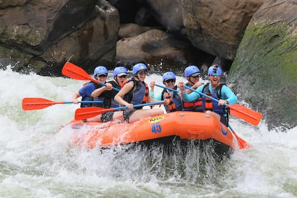
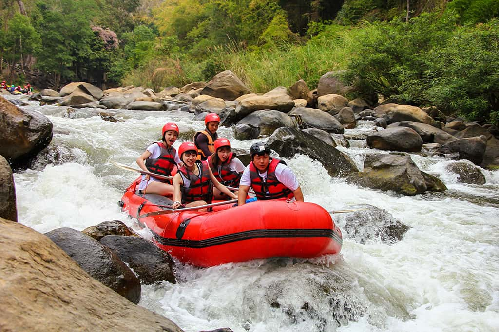
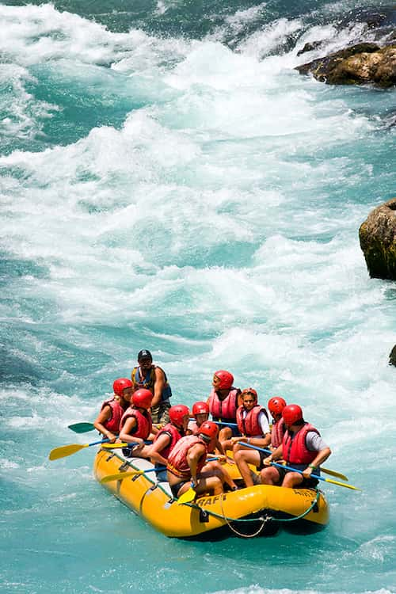

“Our experience with Rapids Whitewater Rafting was an incredible one. The crashing waves, the screams of excitement, and the bonds that were formed along the way made this a fun memory that none of us will forget.”


“Our experience with Rapids Whitewater Rafting was an incredible one. The crashing waves, the screams of excitement, and the bonds that were formed along the way made this a fun memory that none of us will forget.”
Rapids Whitewater Rafting was founded in 1968 by a man named William Stone. William Stone first got the idea of founding a whitewater company from his visit to Canada. William Stone was adventurous and often hiked in forests. One day during one of his hikes in Canada, he saw a group of people on a raft riding down a rapid river. He didn't know what they were doing or what it was called, but he wanted to learn more.

He spent the rest of his time there studying this new form of entertainment that was whitewater rafting. When William Stone returned to his country, he spent years trying to find a way to bring whitewater rafting to his homeland. Through determination and passion, he slowly gathered the necessary materials and resources to eventually form the Rapids Whitewater Rafting company.